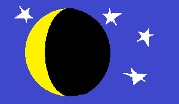
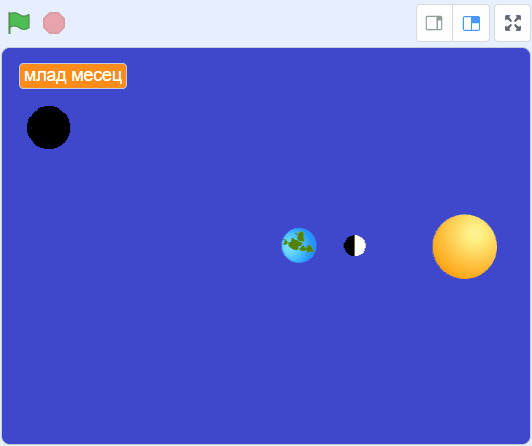
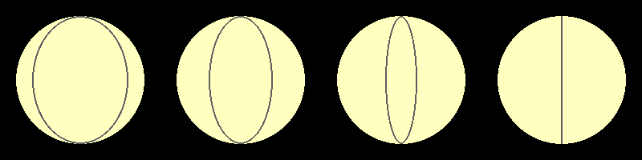
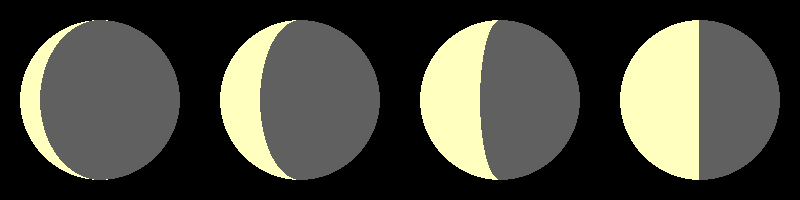
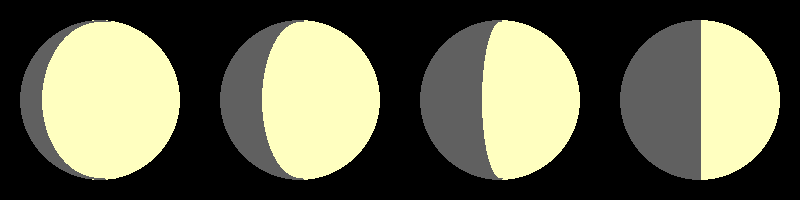
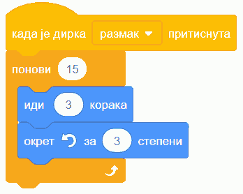
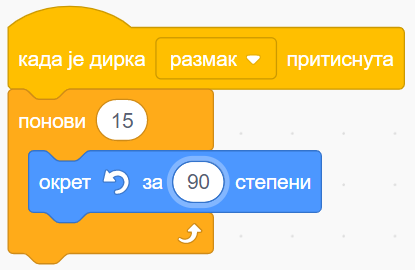

Предлог пројекта - Месечеве мене¶
Мотивација¶
У дечијим сликовницама се често могу наћи овакве илустрације:
{kind=link}
Наравно, таква слика по много чему не одговара стварности. Примера ради, знамо да звезде немају такав облик, већ су (приближно) лоптасте. Такође знамо да је и Месец лоптастог облика. Знајући то, да ли можеш да одговориш на следећа питања?
Зашто Месец на небу често видимо у облику српа?
Зашто у стварности не би било могуће видети звезду на средини слике доле?
Да ли Месецу недостаје део круга зато што друго небеско тело прави сенку на његовој површини?
Циљ овог пројекта је да направиш Скреч програм, који кроз илустрације или анимацију објашњава како настају Месечеве мене, односно зашто нам Месец током времена изгледа различито.
Познато ти је да Месец није ужарен као звезде и да не исијава своју светлост, него одбија светлост којом га обасјава Сунце. Сунце обасјава Месец само са једне стране, па он има има једну осветљену и једну неосветљену страну (полулопту). Страна са које је Месец обасјан најчешће није она са које га ми гледамо. Тако, од стране која је окренута ка нама један део је осветљен а други није, при чему ми видимо само осветљени део.
Кликни на дугме испод и покрени анимацију. То може да ти помогне да боље разумеш оно што је претходно речено.
Овим смо, што у речи што у слици, скоро потпуно одговорили на сва три постављена питања. Осим појашњења одакле потиче српасти изглед Месеца, сада је јасније и зашто поменута звезда у средини доле не може да се види - заклоњена је неосветљеним делом Месеца.
{kind=link}
Такође, постаје јасније да нацртана граница између осветљеног и неосветљеног дела на претходне две слике не изгледа како треба, јер неосветљени део не изгледа као полулопта. Тачнији приказ самог Месеца би изгледао овако:
{kind=link}
Сценарио пројекта¶
Програм треба да приказује разне међусобне положаје Сунца, Земље и Месеца и да тим приказом појасни како долази до Месечевих мена. На пример, једна могућност је оваква анимација, која се, део по део покреће притисцима на тастер за размак:
{kind=link}
У овој анимацији се види да, док Месец кружи око Земље, он долази у разне положаје у односу на Земљу (са које га посматрамо) и Сунце (које га обасјава). Због тога се, на страни која је нама окренута, величина осветљеног дела мења и Месец нам током времена изгледа различито. Ови различити изгледи Месеца (гледано са Земље) су приказани у левом горњем углу, а ту су и називи мена (млад месец, прва четврт, пун месец, последња четврт) и описи положаја Месеца између мена.
Пројекат може да укључи и мање или више детаља од овога што је приказано у анимацији. На пример, пројекат може да се поједностави тако што се укључи мањи број положаја Месеца, што се изоставе називи мена, што се изостави само кретање Месеца и обртање Земље (промене могу да буду скоковите) итд. Пројекат може да постане и сложенији, нпр. тако што се дода више положаја Месеца, или тако што се анимира и кретање Земље око Сунца.
Ликови могу да се померају на одређено време (нпр. на сваких пар секунди), или на притисак одређеног тастера на тастатури, као што је случај у анимацији горе.
Анализа и планирање¶
Ликови¶
За варијанту пројекта приказану у анимацији следећа три лика су логичан избор:
Месец
Земља
изглед Месеца са Земље
Сунце може да буде лик, јер се тако лакше добија потребна сцена, али тај лик у предложеној варијанти пројекта не ради ништа (нема скрипте). Због тога је сасвим у реду да Сунце буде приказано и као део позадине.
Костими¶
За Месец који кружи довољан је један костим, који се види у анимацији. Земља такође има само један костим, који се може једноставно нацртати. За приказ је важно да начин окретања ових ликова буде исправно подешен (“на све стране” за Земљу, а “без окретања” за Месец).
За лик који приказује изглед Месеца са Земље је потребно више костима (у нашем примеру употребљено је 8). Већ смо поменули да недостајући део на слици Месеца није сенка другог небеског тела, него Месечева неосветљена страна. Да би неосветљени део изгледао верније, треба имати на уму да је он полулопта. Прилично веран приказ може да се добије ако замислимо меридијане на Месецу, слично онима какви су уведени на Земљи. Те меридијане можемо да нацртамо цртајући елипсе разних ширина, које имају исти центар и исту висину као и круг који представља цео Месец.
{kind=link}
Граница између осветљене и неосветљене полулопте је увек неки од ових меридијана. Када имамо нацртан меридијан, лако можемо део круга са једне његове стране да обојимо једном бојом, а са друге стране другом бојом.
 {kind=link}
{kind=link}
Скрипте¶
Почетне положаје свих ликова можеш да одредиш и испробавањем.
Брзина окретања ликова зависи од броја положаја Месеца које приказујеш у пројекту. Месец у нашем примеру има 8 положаја, па он до следећег положаја прелази осмину круга око Земље. Пошто се ликови у Скречу крећу само праволинијски, потребно је да Месец прелазећи мала растојања постепено скреће. При томе, до следећег положаја Месец треба да направи заокрет од укупно \({360 \over 8} = 45\) степени, на пример као 15 заокрета од по 3 степена:
{kind=link}
Уместо 3 корака, теби ће можда више одговарати 2, 4, или 5, зависно од распореда и величине ликова. И овде је најједноставнији начин испробавање.
За исто време, Земља се само окреће око себе. Имајући у виду да месец направи круг око Земље за око 29 дана, а да Земља за то време направи око 29 кругова око своје осе, закључујемо да Земља прави заокрете тридесетак пута брже него Месец. Према томе, реалан однос брзина окретања би захтевао да, док Месец уз кретање заокрене за три степена, Земља за исто време у месту заокрене за око 90 степени. Стога би Земљина скрипта могла да изгледа овако:
{kind=link}
Наравно, пошто ни међусобна растојања ни величине ликова нису у реалном односу, није пресудно ни да то буду брзине окретања. Тако за брзину окретања Земље можеш да ставиш било коју вредност за коју твоја анимација изгледа добро.
Скрипта лика који приказује изглед Месеца гледано са Земље треба да на притисак размакнице обезбеди мењање костима и мењање назива мене (ако је назив укључен у пројекат). Називе мена можеш да ставиш у листу и да помоћу једне бројачке променљиве сваки пут приказујеш следећи назив.
Самоевалуација¶
Када направиш програм, покушај да (пре свега себи) одговориш на ова питања:
Да ли је, по твојој процени, пројекат успешно приведен крају? Колико си ти лично задовољан-задовољна урађеним? Зашто?
Који део је био посебно тежак? Како си га решио-решила? Да ли је постојао неки проблем чијим решавањем се посебно поносиш?
Да ли је било накнадних измена првобитног плана? Због чега?
Да ли је пројекат био користан за стицање или унапређивање неких знања или вештина? Којих?
Размисли шта од овога би било интересантно другима да чују током твог представљања пројекта.